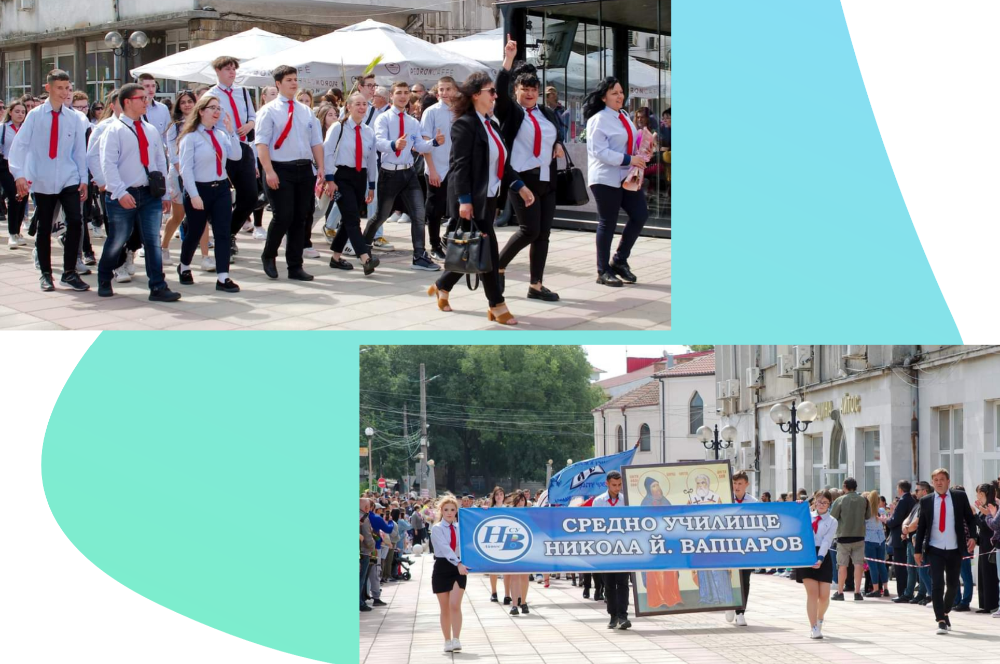
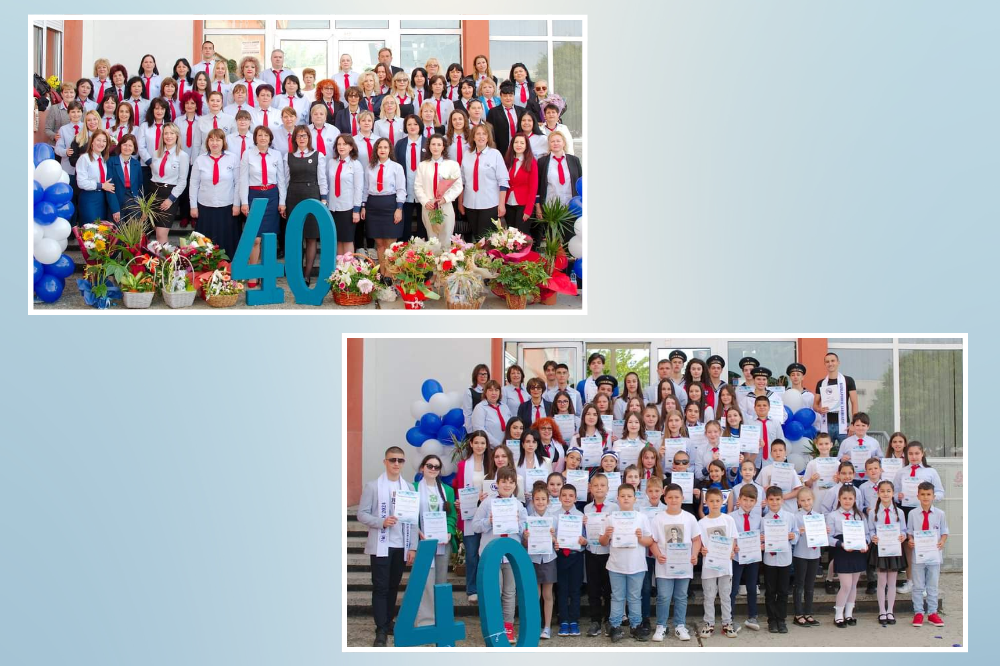
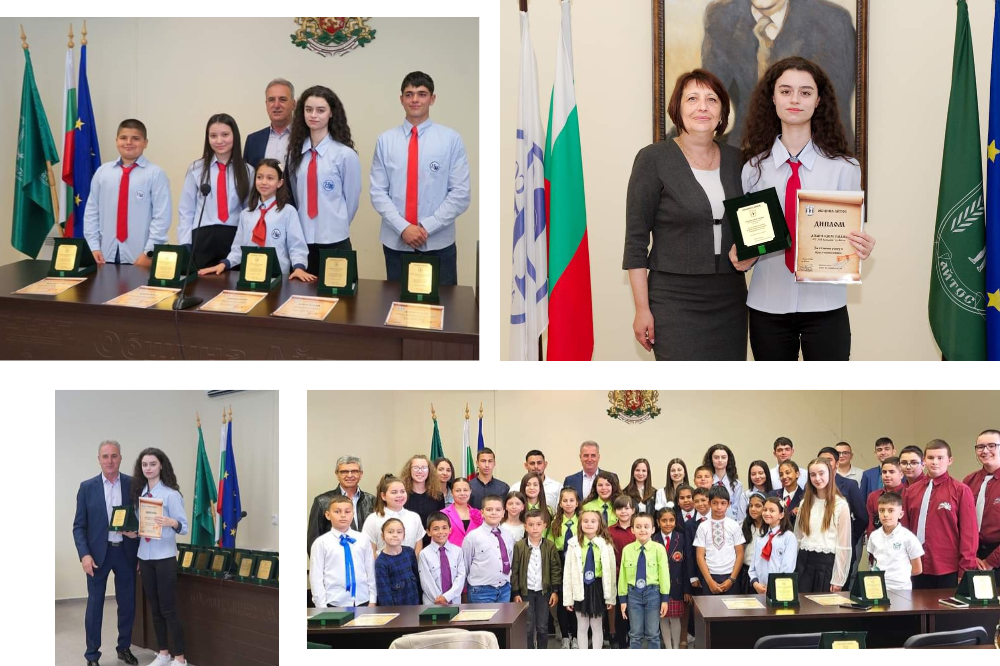
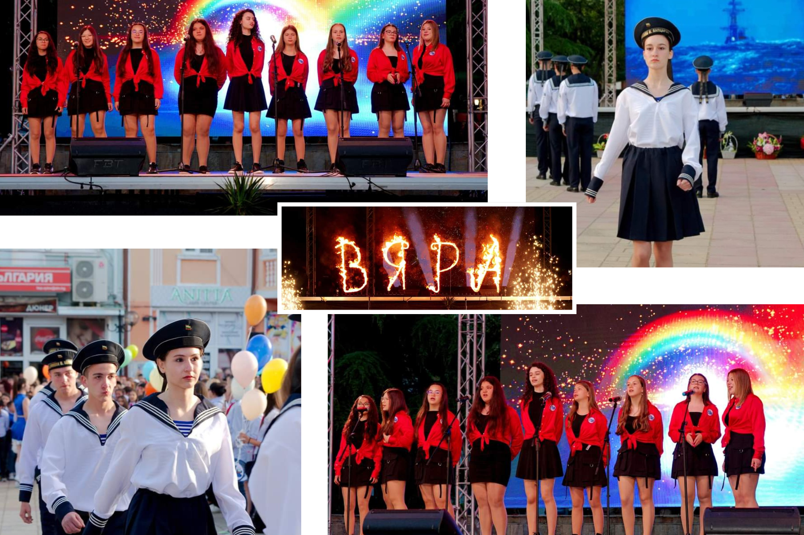
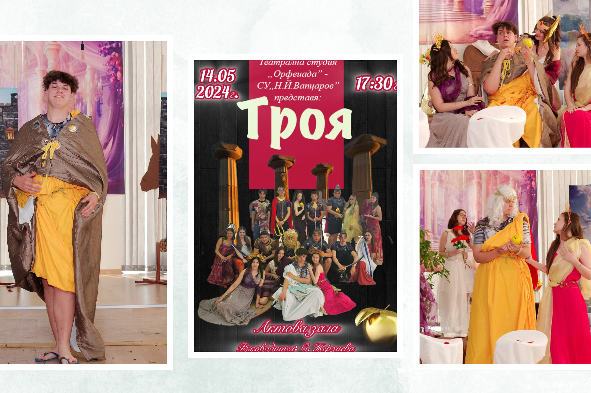
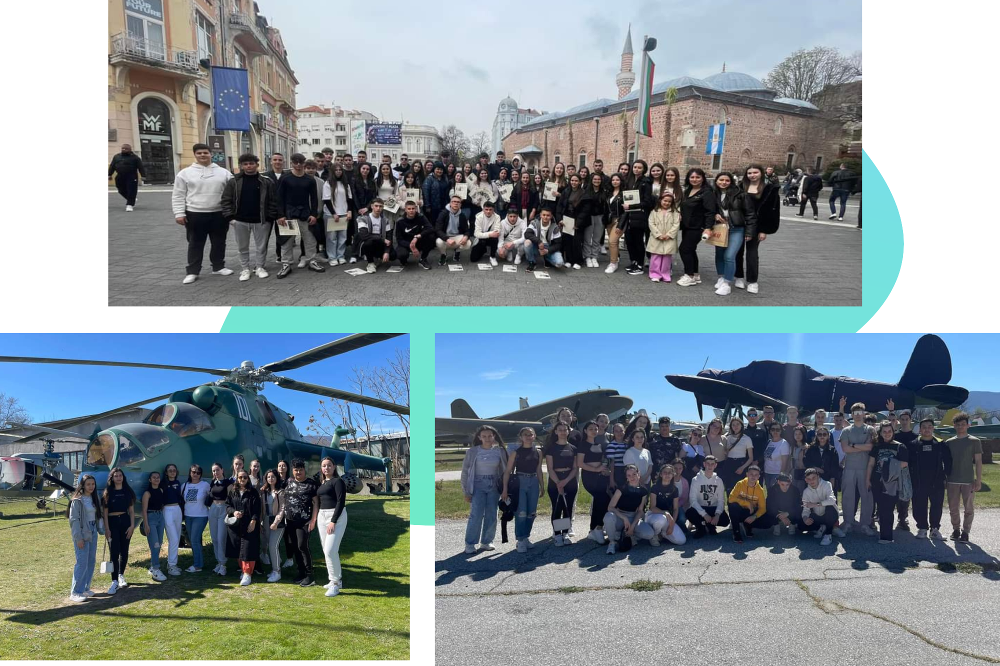
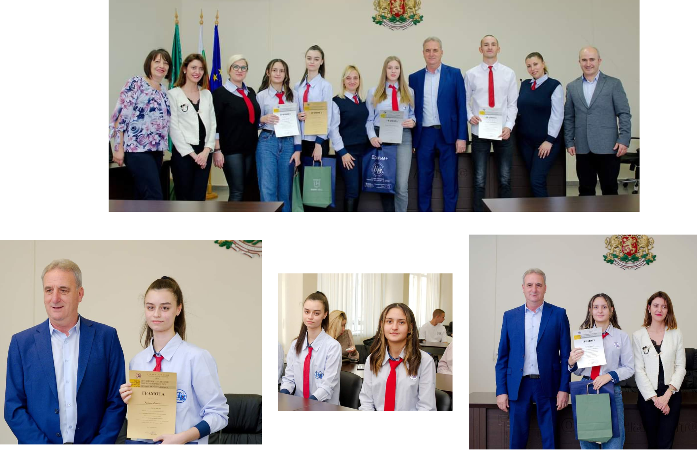
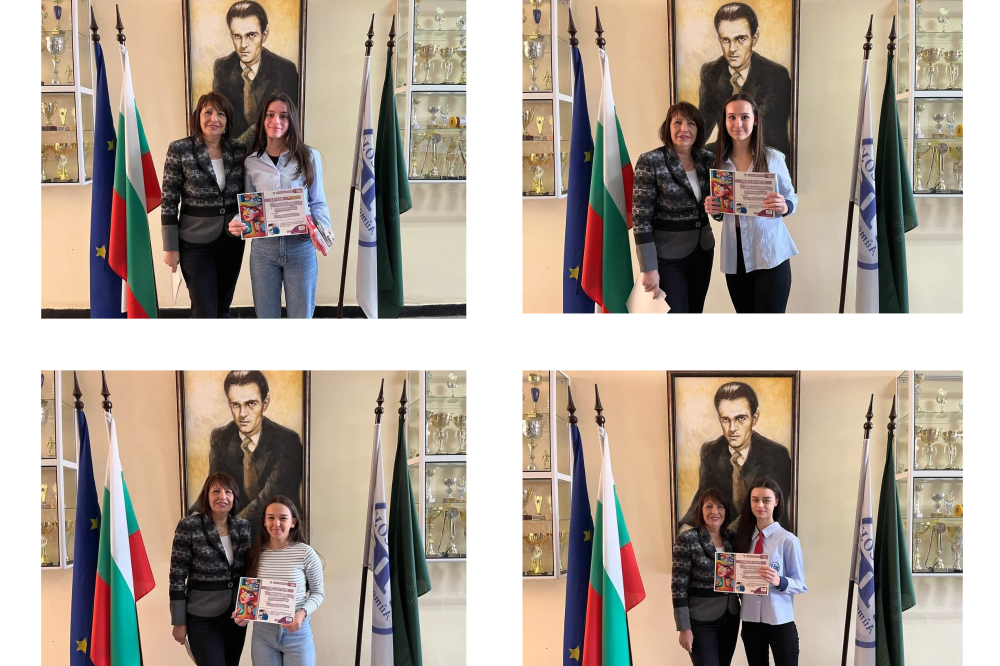

24 мая


Ежегодные награды за отличный успех и престижные выступления
Накануне 24 мая мэр Айтосского муниципалитета Васил Едрев встретился с отличниками и отличничками всего муниципалитета. Они получилиперсональные приглашения от мэра на традиционную предпраздничную встречу. Мероприятие прошло в зале заседаний, где господин Едрев поздравил детей с успехами и пообщался с каждым из них. За успехи в учебном году вапцаровцы получили почетную грамоту и диплом.
Наша школа наградила четырех учеников. Среди них была наша одноклассница Айлин Смаил. Это ее вторая награда от мэра.
Поздравляю, Айлин!

40 лет Веры
Наша школа отметила свое 40-летие ярким концертом. В праздничном мероприятии также приняли участие наши одноклассники - от военно-морского отряда Алейна, Еля и Нора и от вокалньного формирования школы - Айлин и Хабибе.

Спектакаль „Троя“
Звезделин и его великолепное актерское мастерство! Желаем ему еще многих выступлений! Поздравляю, Звезди!

Пасхальный базар
В этом году мы также приняли участие в пасхальном базаре, собрав более 210 лв.,которые будут направлены на празднование нашего 40-летия.
Наша первая экскурсия в Пловдив

Конкурс переводов
Награждение победителей шестого школьного конкурса переводчиков
Айлин Смаил заняла первое место в письменном переводе на русский язык , а Нергис Рагуп получила поощрительную награду.
Браво успешным переводчикам!

Конкурс „Лора Янева“
Селен Мехмед с первой премией национального конкурса
В декабре 2023 года школьницы под руководством Фатме Иляз приняли участие в Национальном конкурсе абстрактного искусства и живописи имени Лора Янева.
15 декабря 2024 года участники получили свои награды через директора школы Ирину Ватеву.
Поздравляем Селен, Айлин, Айше и Алейна!
